with pm.Model() as model:
# Priors for unknown model parameters
mu = pm.Normal('mu', mu=0, sigma=10)
sigma = pm.HalfNormal('sigma', sigma=10)
# Likelihood (sampling distribution) of observations
y_obs = pm.Normal('Y_obs', mu=mu, sigma=sigma, observed=y)
# draw 500 samples from the prior predictive
dt = pm.sample_prior_predictive(samples=500, random_seed=SEED)5 Prior and Posterior predictive checks
Models are simplifications of reality, sometimes even very crude simplifications. Thus, we can never fully trust them. While hoping they are good enough is an option, we should try to do better. One general approach to criticizing model is to judge them by their predictions. If a model is robust, its predictions should align well with observations, domain knowledge, or some other benchmark. There are at least four avenues to explore:
Compare to prior knowledge. For example, if we are modelling the size of planets we can evaluate if the model is making predictions in a sensible range. Even if we are equipped with a very rudimentary knowledge of astronomy we know that planets are larger than persons and smaller than galaxies. So if the model is predicting that the size of a planet is 1 meter, then we know that the model is not that good. The better your prior knowledge is, the better you will be able to critique your model assumptions. If you are not an expert in the field, and maybe even if you are, you can always try to find someone who is.
Compare to observed data. We fit a model and compare the predictions to the same data that we used to fit the model. This is an internal consistency check of the model, and we should expect good agreement. But reality is complex and models can be too simple or they can be misspecified so there is a lot of potential in these types of checks. Additionally, even very good models might be good at recovering some aspects of the data but not others, for instance, a model could be good at predicting the bulk of the data, but it could overestimate extreme values.
Compared to unobserved data. We fit a model to one dataset and then evaluate it on a different dataset. This is similar to the previous point, but this is a more stringent test because the model is being asked to make predictions on data that it has not seen before. How similar the observed and unobserved data are will depend on the problem. For instance, a model trained with data from a particular population of elephants might do a good job at predicting the weight of elephants in general, but it might not do a good job at predicting the weight of other mammals like shrews.
Compare to other models. We fit different models to the same data and then compare the predictions of the models. This particular case is discussed in detail on Chapter 7.
As we can see there are plenty of options to evaluate models. But we still have one additional ingredient to add to the mix, we have omitted the fact that we have different types of predictions. An attractive feature of the Bayesian model is that they are generative. This means that we can simulate synthetic data from models as long as the parameters are assigned a proper probability distribution, computationally we need a distribution from which we can generate random samples. We can take advantage of this feature to check models before or after fitting the data:
- Prior predictive: We generate synthetic observations without conditioning on the observed data. These are predictions that we can make before we have seen the actual data.
- Posterior predictive: We generate synthetic observations after conditioning on the observed data. These are predictions that we can make after we have seen the data.
Additionally, for models like linear regression where we have a set of covariates, we can generate synthetic data evaluated at the observed covariates (our “Xs”) or at different values (“X_new”). If we do the first we call it in-sample predictions, and if we do the second we call it out-of-sample predictions.
With so many options we can feel overwhelmed. Which ones we should use will depend on what we want to evaluate. We can use a combination of the previous options to evaluate models for different purposes. In the next sections, we will see how to implement some of these checks.
5.1 Prior predictive checks
The idea behind prior predictive checks is very general and simple: if a model is good it should be able generate data resembling our prior knowledge. We call these checks, prior predictive because we are generating synthetic data before we have seen the actual data.
The general algorithm for prior predictive checks is:
- Draw \(N\) realizations from a prior distribution.
- For each draw, simulate new data from the likelihood.
- Plot the results.
- Use domain knowledge to assess whether simulated values reflect prior knowledge.
- If simulated values do not reflect prior knowledge, change the prior distribution, likelihood, or both and repeat the simulation from step 1.
- If simulated values reflect prior knowledge, compute the posterior.
Notice that in step 4 we use domain knowledge, NOT observed data!
In steps 1 and 2 what we are doing is approximating this integral: \[ p(y^\ast) = \int_{\Theta} p(y^\ast \mid \theta) \; p(\theta) \; d\theta \]
where \(y^\ast\) represents unobserved but potentially observable data. Notice that to compute \(y^\ast\) we are evaluating the likelihood over all possible values of the prior. Thus we are effectively marginalizing out the values of \(\theta\), the parameters.
To exemplify a prior predictive check, let’s try with a super simple example. Let’s say we want to model the height of humans. We know that the heights are positive numbers, so we should use a distribution that assigns zero mass to negative values. But we also know that at least for adults using a normal distribution could be a good approximation. So we create the following model, without too much thought, and then draw 500 samples from the prior predictive distribution.
stan_code = """
data {
int<lower=0> N;
array[N] real y;
}
parameters {
real mu;
real<lower=0> sigma;
}
model {
// Priors
mu ~ normal(0, 10);
sigma ~ normal(0, 10);
// Likelihood
y ~ normal(mu, sigma);
}
generated quantities {
real prior_mu = normal_rng(0, 10);
real<lower=0> prior_sigma = abs(normal_rng(0, 10));
array[N] real y_prior_pred;
for (i in 1:N) {
y_prior_pred[i] = normal_rng(prior_mu, prior_sigma);
}
}
"""
with open("./stan_code.stan", "w") as f:
print(stan_code, file=f)
# Compile the model
model = cmdstanpy.CmdStanModel(stan_file="./stan_code.stan")
# Prepare the data
stan_data = {
'N': len(y),
'y': y
}
# Sample from the prior predictive distribution
prior_samples = model.sample(
eata=stan_data,
fixed_param=True,
iter_sampling=500,
seed=SEED
)
# Convert to ArviZ
dt = azp.from_cmdstanpy(
prior=prior_samples,
prior_predictive="y_prior_pred",
observed_data={"y": y},
)The figure below displays samples from the prior predictive distribution (shown as solid blue lines). To aid interpretation, we have included two reference values: the average length/height of a newborn (approximately 50 cm) and the average height of adult males in the Netherlands (around 182 cm). Reference values are meaningful benchmarks derived from domain knowledge—not from the observed data—and help assess whether predictions are on a reasonable scale. While there are no strict rules for selecting reference values, different analysts might choose different benchmarks based on context
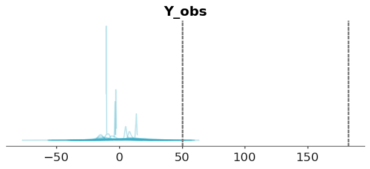
We can see that our model is bananas the bulk of the prior predictive distribution is outside of our reference values and the model is predicting values below 0. This is a clear indication that the model is not a good representation of our prior knowledge.
In many cases, data will be informative enough to overcome poorly selected priors, but this isn’t guaranteed. To address this, we can tighten our priors. While there’s no universal rule for doing so, a good guideline is to choose priors that concentrate most of the prior predictive distribution’s mass within a plausible range—such as between our reference values.
Such priors are often called weakly informative priors. Though not strictly defined, these priors produce a prior predictive distribution with little to no probability mass in unrealistic or impossible regions. For example, a normal distribution with a mean of 160 and a standard deviation of 10 assigns negligible weight to negative values while still accommodating a wide range of plausible heights.
with pm.Model() as model:
# Priors for unknown model parameters
mu = pm.Normal('mu', mu=160, sigma=10)
sigma = pm.HalfNormal('sigma', sigma=10)
# Likelihood (sampling distribution) of observations
y_obs = pm.Normal('Y_obs', mu=mu, sigma=sigma, observed=y)
# draw 500 samples from the prior predictive
dt = pm.sample_prior_predictive(samples=500, random_seed=SEED)stan_code = """
data {
int<lower=0> N;
array[N] real y;
}
parameters {
real mu;
real<lower=0> sigma;
}
model {
// Priors
mu ~ normal(160, 10);
sigma ~ normal(0, 10);
// Likelihood
y ~ normal(mu, sigma);
}
generated quantities {
real prior_mu = normal_rng(160, 10);
real<lower=0> prior_sigma = abs(normal_rng(0, 10));
array[N] real y_prior_pred;
for (i in 1:N) {
y_prior_pred[i] = normal_rng(prior_mu, prior_sigma);
}
}
"""
with open("./stan_code.stan", "w") as f:
print(stan_code, file=f)
# Compile the model
model = cmdstanpy.CmdStanModel(stan_file="./stan_code.stan")
# Prepare the data
stan_data = {
'N': len(y),
'y': y
}
# Sample from the prior predictive distribution
prior_samples = model.sample(
data=stan_data,
fixed_param=True, # Sample from priors only
eter_sampling=500,
seed=SEED
)
# Convert to ArviZ
dt = azp.from_cmdstanpy(
prior=prior_samples,
prior_predictive="y_prior_pred",
observed_data={"y": y},
)We repeat the prior predictive checks with the new prior predictive distribution. We can see that the bulk of the prior predictive distribution is within the reference values.
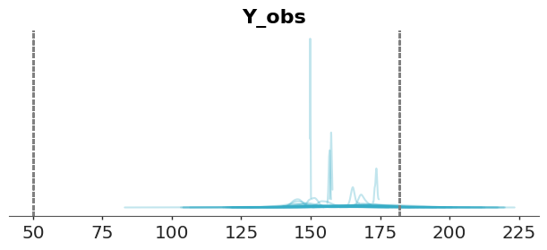
You are free to pick other priors and other reference values and make new prior predictive checks. Maybe you can use the historical record for the taller and shorter persons in the world as reference values.
When plotting many distributions, where each one spans a narrow range of values compared to the range spanned but the entire collection of distributions, it is usually a good idea to plot the cumulative distribution instead of KDEs, histograms, or quantile dot plots.
pc = azp.plot_ppc_dist(dt, group="prior_predictive", kind="ecdf")
azp.add_lines(pc, values=(50, 182))
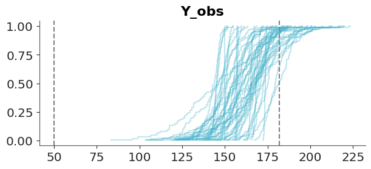
5.1.1 A final note about priors
Before moving on to the next section, we would like to share one last thought on priors. If you have access to reliable prior knowledge, you should use it, there’s no good reason to discard valid information. But in many real-world scenarios, turning that knowledge into informative priors often require considerable effort and time. And in some cases, they may lead to results that are nearly indistinguishable from those produced using less carefully chosen priors.
In practice weakly informative priors can offer meaningful advantages over both vague and informative priors. Even a modest amount of prior information is often better than none at all, as it helps guard against implausible or misleading results and it could provide computational benefits, such as improved sampling efficiency while being usually easier and less time-consuming to elicit than fully informative priors.
Finally, one benefit that’s often underappreciated is that running prior predictive checks and playing around with different priors can give you valuable insights into your model and the problem you’re trying to solve, regardless of their impact on their direct impact on the posterior. To learn more about prior elicitation, check out Chapter 10.
5.2 Posterior predictive checks
The idea behind posterior predictive checks is very general and simple: if a model is good it should be able generate data resembling the observed data. We call these checks, posterior predictive because we are generating synthetic data after seeing the data.
The general algorithm for posterior predictive checks is:
- Draw \(N\) realizations from the posterior distribution.
- For each draw, simulate new data from the likelihood.
- Plot the results.
- Use observed data to assess whether simulated values agree with observed values.
- If simulated values do not agree with observations, change the prior distribution, likelihood, or both and repeat the simulation from step 1.
- If simulated values reflect prior knowledge, compute the posterior.
Notice that in contrast with prior predictive checks, we use observations here. Of course, we can also include domain knowledge to assess whether the simulated values are reasonable, but because we are using observations we do more stringent evaluations.
In steps 1 and 2 what we are doing is approximating this integral: \[ p(\tilde y) = \int_{\Theta} p(\tilde y \mid \theta) \; p(\theta \mid y) \; d\theta \]
where \(\tilde y\) represents new observations, according to our model. The data generated is predictive since it is the data that the model expects to see.
Notice that what we are doing is marginalizing the likelihood by integrating all possible values of the posterior. Therefore, from the perspective of our model, we are describing the marginal distribution of data, that is, regardless of the values of the parameters.
Continuing with our height example, we can generate synthetic data from the posterior predictive distribution.
stan_code = """
data {
int<lower=0> N;
array[N] real y;
}
parameters {
real mu;
real<lower=0> sigma;
}
model {
// Priors
mu ~ normal(0, 10);
sigma ~ normal(0, 10);
// Likelihood
y ~ normal(mu, sigma);
}
generated quantities {
real prior_mu = normal_rng(0, 10);
real<lower=0> prior_sigma = abs(normal_rng(0, 10));
array[N] real y_prior_pred;
for (i in 1:N) {
y_prior_pred[i] = normal_rng(prior_mu, prior_sigma);
}
array[N] real log_lik;
for (i in 1:N) {
log_lik[i] = normal_lpdf(y[i] | mu, sigma);
}
array[N] real y_rep;
for (i in 1:N) {
y_rep[i] = normal_rng(mu, sigma);
}
}
"""
with open("./stan_code.stan", "w") as f:
print(stan_code, file=f)
# Compile the model
model = cmdstanpy.CmdStanModel(stan_file="./stan_code.stan")
# Prepare the data
stan_data = {
'N': len(y),
'y': y
}
prior_samples = model.sample(
data=stan_data,
fixed_param=True, # Sample from priors only
iter_sampling=500,
seed=SEED
)
posterior = model.sample(data=stan_data)
# Convert to ArviZ
dt = azp.from_cmdstanpy(
posterior=posterior,
prior=prior_samples,
prior_predictive={"y":"y_prior_pred"},
posterior_predictive={"y": "y_rep"},
log_likelihood={"y": "log_lik"},
observed_data={"y": y},
)And then we use ArviZ to render the comparison. We can see that the model is doing a good job at predicting the data. The observed data (black line) is within the bulk of the posterior predictive distribution (blue lines).
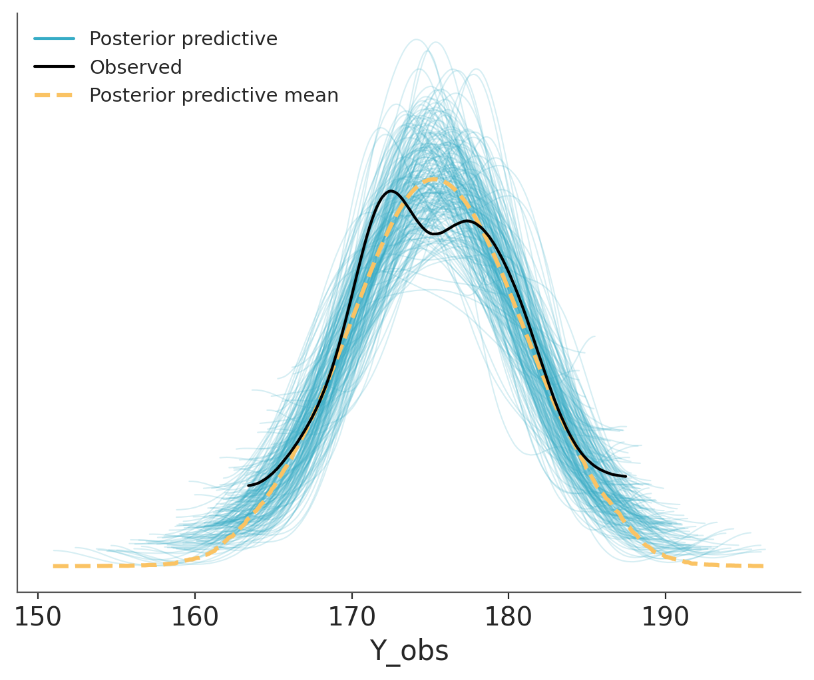
Other common visualizations to compare observed and predictive values are empirical CDFs, histograms and less often quantile dotplots. Like with other types of visualizations, you may want to try different options, to be sure visualizations are not misleading and you may also want to adapt the visualization to your audience.
5.2.1 Using summary statistics
Besides directly comparing observations and predictions in terms of their densities, we can do comparisons in terms of summary statistics, like the median, the interquartile range, the standard deviation etc. Which ones we decide to use can vary from one data-analysis problem to another, and ideally they should be informed by the data-analysis goals. As in posterior predictive checks we use the data twice, first for fitting the model and then for checking it. It is advisable to select test statistics that are orthogonal to the model parameters (Gabry et al. 2019). For example, in a Normal model with a location parameter, the mean should be easy to recover, so a posterior predictive check using the mean as a test statistic would not be a particularly stringent test. As in many common models there is a location parameter, then the mean is usually not a good test statistic.
We can use the plot_ppc_tstat function to display the posterior predictive distribution of a test statistic. The function takes as input a DataTree with a posterior_predictive and observed_data groups and a name of the test statistic (custom function are also allowed), and it will compute the posterior predictive distribution of that statistic. The function also computes the observed value of the test statistic and plots it as a dot at the bottom of each subplot.
The following figure shows a comparison in terms of the mean, median and interquartile range (IQR). The dots at the bottom of each subplots corresponds to the summary statistics computed for the observed data and the KDE is for the model’s predictions.
pc = azp.combine_plots(dt,
plots=[
(azp.plot_ppc_tstat, {"t_stat":"median"}),
(azp.plot_ppc_tstat, {"t_stat":"mad"}),
(azp.plot_ppc_tstat, {"t_stat":"iqr"}),
],
group="posterior_predictive",
)
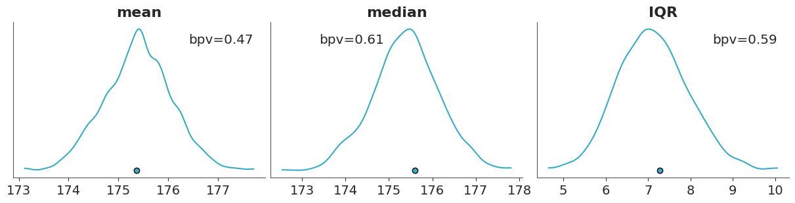
If we want a numerical summary of a posterior predictive checks using test statistics we can compute the proportion of simulated data that is less than or equal to the observed data: \[ p(T_{\text{sim}} \le T_{\text{obs}} \mid \tilde y) \]
Where \(T\) is the summary statistic of our choice, computed for both the observed data \(T_{\text{obs}}\) and the simulated data \(T_{\text{sim}}\).
This is known as a posterior predictive p-value (or Bayesian p-value). This is similar to the frequentist p-value, but computed with respect to the posterior predictive distribution, instead of the sample distribution under the null hypothesis.
A posterior predictive p-value of 0.5 indicates that half of the predictions are below the observed values and half above. Posterior predictive p-values do not in general have uniform distributions under the null hypothesis but instead tend to have distributions more concentrated near 0.5 (Gelman 2013). For instance, we already mentioned that the mean is easy to recover for many models and thus the posterior predictive p-value for the mean is often concentrated around 0.5.
The term “Bayesian p-values” may sound like an oxymoron or paradoxical (Meng 1994). The Bayesian p-values are defined similar to their frequentist cousins and hence the name. But they are used in a very different way. We use posterior predictive p-values as a diagnostic tool to asses potential mismatches between model and data rather than as a measure of “statistical significance” or as a dichotomy decision tool. The null hypothesis is that the predictions from the model and the observed data are drawn from the same data-generating process, but in practice we are not interested in rejecting this hypothesis. We already know is not true! Instead, we are interested in understanding how well the model is doing at predicting the data, detecting potential problems, an if possible or desirable improving the model.
5.2.2 PIT-ECDFs
Instead of using a summary statistics, as before, we can directly compare observations and predictions by computing: \[ p(\tilde y_i \le y_i \mid y) \]
This is often called the marginal p-value and the ideal distribution is the standard uniform distribution. The intuition is that if the model can generate predictions from the same distribution as the observed data, then the observed data can be thought of as just one random sample from the posterior predictive distribution. In this case, the observed data point is equally likely to appear anywhere within the range of the predicted values. This means there’s no systematic bias in where the observation falls, and the p-values derived from comparing the observed data to the predictions will be uniformly distributed.
A more formal justification for this result is provided by the Probability Integral Transform (PIT). This property, also known as the universality of the Uniform distribution, states that if \(Y\) is a random variable with a continuous distribution and cumulative distribution function (CDF) \(F_Y\), then the transformed variable
\[ U = F_Y(Y) \]
follows a standard Uniform distribution. A proof of this result can be found in the The Book of Statistical Proofs.
In other words if we apply the CDF of any continuous distribution to a random variable with that distribution, the result will be a random variable with a standard uniform distribution. This is a very powerful result, as it allows us to use the standard uniform distribution as a reference distribution for many statistical tests, including posterior predictive checks.
As mentioned earlier, the marginal p-value is given by
\[ p(\tilde y_i \leq y_i \mid y). \]
If the observed data and predictions are drawn from the same distribution, this expression is then equivalent to the definition of the CDF:
\[ F_Y(y) = \mathrm{Pr}(Y \leq y). \]
Thus, we can see the computation of the marginal p-value as an application of the Probability Integral Transform.
In practice we don’t have the CDF, but this is no problem as we have samples from the posterior predictive and hence we can compute the empirical CDF (ECDF). The CDF of the standard Uniform distribution is a diagonal line that goes from (0, 0) to (1,1), as shown in Figure 5.6. Deviations from this line may indicate problems with the model. This is a very simple to interpret visualization.
The disadvantage of such visualization is that all the “action” is close to the diagonal line and most of the plot is just blank space. A simple trick to improve the data-ink ratio is to render the difference between the observed and expected cumulative distribution functions, the \(\Delta\)-ECDF, as shown in Figure Figure 5.7. The last ingredient to improve this visual diagnostic is to add a confidence band. Due to finite sample size we should expect deviations from uniformity, so a confidence band gives us an idea of how much deviation is expected by chance.
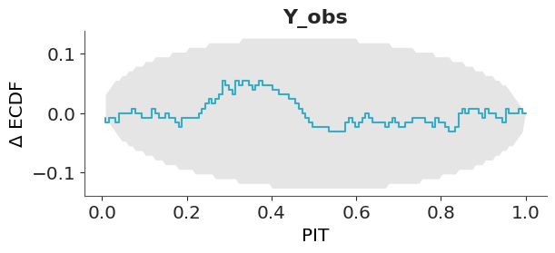
In ArviZ, we use the simultaneous confidence bands described by Säilynoja, Bürkner, and Vehtari (2022). The simultaneous confidence bands take into account the probability of observing deviations of the entire curve, as opposed to independent pointwise deviations. The band or envelope has an oval shape because the probability of observing a deviation is null at 0 and 1, all ECDFs must start at 0 and end at 1, and is higher in the middle of the curve.
To build intuition on how to interpret the PIT-ECDF plots we are going to explore four common patterns using synthetic data. The following three figures show four different scenarios, where the observed data follows a standard normal distribution (\(\mu=0, \sigma^2=1\)). In each case, we compare the observed data to predictions where:
- The mean of the predictions is shifted to the right. The model is overpredicting the data.
- The mean of the predictions is shifted to the left. The model is underpredicting the data.
- The predictions have a wider spread. The predictions are too uncertain.
- The predictions have a narrower spread. The predictions are too certain.
First we show the KDEs of the observed data and the predictions.
observed = pz.Normal(0, 1).rvs(500)
predictions = {}
for i, (mu, sigma) in enumerate([
(0.5, 1), # shifted to the right
(-0.5, 1), # shifted to the left
(0, 2), # wider
(0, 0.5), # narrower
]):
predictions[f"y{i}"] = pz.Normal(mu, sigma).rvs((4, 500, 100))
dt_i = azp.from_dict({
"posterior_predictive":predictions,
"observed_data": {f"y{i}": observed for i in range(len(predictions))}
})
azp.plot_ppc_dist(dt_i,
kind="kde",
visuals={"remove_axis":False},
figure_kwargs={"sharey":True},
);
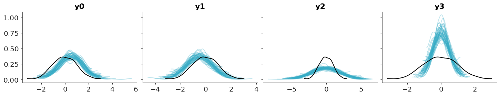
Then we show the ECDFs of the observed data and the predictions.
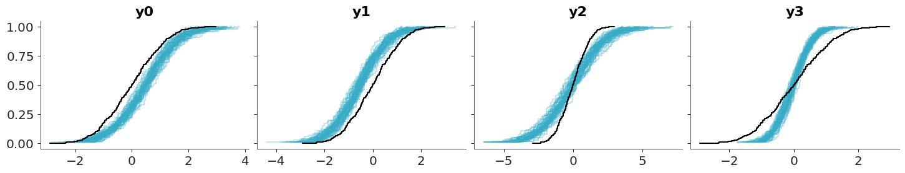
Finally, we show the PIT-ECDFs.
5.2.3 Coverage
The coverage is the proportion of true values that fall within a given prediction interval. For a well-calibrated model, the coverage should match the intended interval width. For example, a 95% credible interval should contain the true value 95% of the time.
For equal-tailed intervals (ETI), the coverage can be obtained by transforming the PIT values, we just need to replace the PIT with two times the absolute difference between the PIT values and 0.5. As with the PIT-ECDFs we saw in the previous section, for a well calibrated model, we should expect the coverage to be uniform and within the confidence envelope.
Using ArviZ we can visualize the ETI coverage by setting coverage=True in the plot_ppc_pit function.
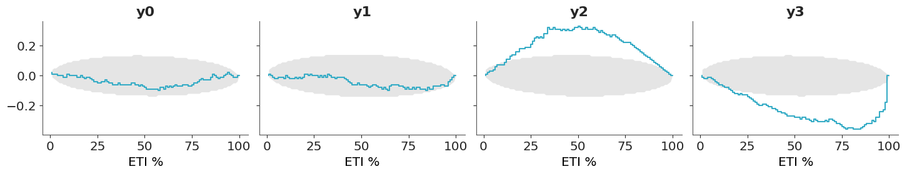
- If the difference is positive, the model is under-confident: the predictions have a wider spread than the data – they are too uncertain.
- If the difference is negative, the model is over-confident: the predictions have a narrower spread than the data – they are too certain.
5.2.4 Avoiding double-dipping
So far we have being using the data twice, first to fit the model and then to evaluate it. This is a common practice in Bayesian data analysis and it is not a problem as long as we are aware of it. The main goal is to understand how well the model is doing at predicting the data, detecting potential problems, and if possible or desirable improving the model.
Still, we may want to avoid double-dipping. So instead of computing:
\[ p(\tilde y_i \leq y_i \mid y) \]
We may want to compute:
\[ p(\tilde y_i \leq y_i \mid y_{-i}) \]
where \(y_{-i}\) is the observed data without the \(i\)-th observation.
This is a more stringent test, as we are not using the \(i\)-th observation to compute the posterior predictive distribution. This is known as the leave-one-out cross-validation (LOO-CV) and it is a very popular method to assess the predictive performance of a model.
In principle computing this will be too costly, as we need to compute the posterior predictive distribution \(n\) times, where \(n\) is the number of observations. However, we can use a method called Pareto-smoothed importance sampling (PSIS) to approximate the LOO-CV from a single posterior computation. This is a topic we will discuss in more detail in Chapter 7. ArviZ offers many functions based on this method, one of them is loo_pit.
5.2.5 Hypothetical Outcome Plots
Another strategy that can be useful for posterior predictive plots is to use animations. For example instead of showing all draws from the posterior predictive at the same time Hypothetical Outcome Plots (HOPs) shows them animated with one just a few draws per frame. HOPs enable a user to experience uncertainty in terms of countable events, just like we experience probability in our day to day lives. You can read more about HOPs here.
5.3 Posterior predictive checks for discrete data
So far we have show examples with continuous data. Many of the tools can still be used for discrete data, while KDEs are not useful for discrete data (unless the number of discrete values is large enough to assume continuity), histograms with properly specified bins (like one bin per discrete value) and ECDFs can be used for discrete data. Still, there are some posterior predictive plots that has been specifically designed for discrete data. In the next sections we discuss some of them.
5.3.1 Posterior predictive checks for count data
Count data is a type of discrete data that is very common in many fields. For instance, the number of iguanas per square meter in a rainforest, the number of bikes in a bike-sharing station, the number of calls to a call center, the number of emails you got last year, etc. When assessing the fit of a model to count data we need to consider the discreetness of the data and that we usually care about the amount of (over/under-)dispersion.
Rootograms are a graphical tool to assess the fit of count data models (Tukey 1977; Kleiber and Zeileis 2016). There are a few variations of rootograms, but traditionally rootograms use bars for the predicted data, and lines (plus markers) for the observed data. Finally, instead of plotting the raw data, they show the square root of the observed and predicted counts, which explain the name of the plots. The reason to square root the data is to make easier to compare observed and expected frequencies even for low frequencies. Often the uncertainty in the predictions is omitted.
Here we are going to discuss the rootograms presented by Säilynoja et al. (2025). These rootograms emphasises the discreteness of the data and and predictions by using points. The uncertainty in the predictions is encoded using intervals. Instead of square-rooting the data, it set the y-axis on the square root scale, this makes easier to interpret the data, because we can directly read the frecuencies from the y-axis (instead of reading the square roots) while keeping the advantage of being able to discriminate details at lower frecuencies.
To illustrate rootograms we are going to use the Horseshoe crabs dataset (Brockmann 1996). Very briefly, horseshoe crabs arrive at the beach in pairs for their spawning ritual. Solitary males gather around the nesting couples and vying to fertilize the eggs. These individuals, known as satellite males, often congregate near certain nesting pairs while disregarding others. We used Bambi to create two models a poisson model and a hurdle-negative binomial model for the number of male satellites as a function of the carapace width and color of the female.
We are going to omit the modelling details, and just upload prefitted models.
Let’s first check the Poisson model. We can see that the overall fit is not that bad, but the zeros are underpredicted, and counts 1 to 4 are overpredicted. Most counts from 6 onward are also underpredicted. This pattern is an indication of overdispersion in the data, and the huge difference for 0 indicates an excess of zeros.
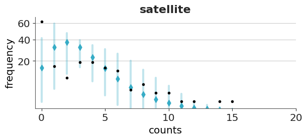
Now we will check the fit for the hurdle model. As expected for a hurdle model we get a perfect fit for the zeros. For the positive values, we still get some deviations, but the fit is better than with the Poisson model.
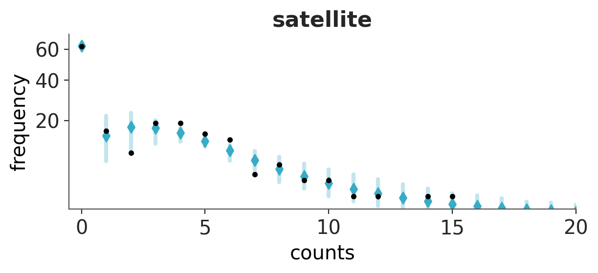
Both models predict more values in the tail than observed, even if with low probability. For both plots, we restrict the x-range to (0, 20).
5.3.2 Posterior predictive checks for binary data
Binary data is a common form of discrete data, often used to represent outcomes like yes/no, success/failure, or 0/1. We may be tempted to asses the fit of a binary model using a bar plot, or a plot similar to the rootogram we showed in the previous section, but this is not a good idea. The reason is that even a very simple model with one parameter for the proportion of one class (like an intercept), can perfectly model that proportion (Säilynoja et al. 2025). Then a bar plot will not be able to tell much about the quality of our model.
One solution to this challenge is to use the so call calibration or reliability plots. To create this kind of plot we first bin the predicted probabilities (e.g., [0.0–0.1], [0.1–0.2], …, [0.9–1.0]) and then for each bin we compute the fraction of observed positive outcomes. In this way we can compare the predicted probabilities to the observed frequencies per bin. The ideal calibration plot is a diagonal line, where the predicted probabilities are equal to the observed frequencies. The problem with this approach is that in practice we don’t have good rules to select the bins and different bins can result in plots that look drastically different.
A more robust and simple to use method, that does not rely on binning the data has been proposed by Dimitriadis, Gneiting, and Jordan (2021). Figure 5.15 shows one example of this method. As previously mentioned, the ideal calibration plot is a diagonal line, where the predicted probabilities are equal to the observed frequencies. If the line is above the diagonal, the model is underestimating the probabilities, and if the line is below the diagonal, the model is overestimating the probabilities.The confidence bands are computed using the method proposed by Dimitriadis, Gneiting, and Jordan (2021).
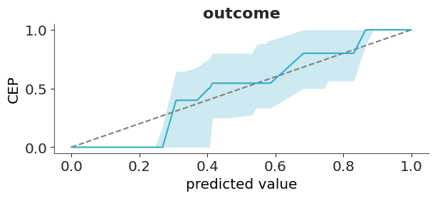
The y-axis of Figure 5.15 is labeled as CEP, short for “conditional event probabilities.” A CEP represents the probability that an event occurs, given that the classifier assigned a particular predicted probability. These probabilities are computed using the pool adjacent violators algorithm (Ayer et al. 1955), also known as the PAV-adjusted method—hence the name of the corresponding function in ArviZ. This algorithm ensures that CEPs are monotonic: they either increase or remain constant as the predicted probabilities increase, but never decrease. This monotonicity assumption is reasonable for calibrated models, where higher predicted probabilities should correspond to higher actual event probabilities.